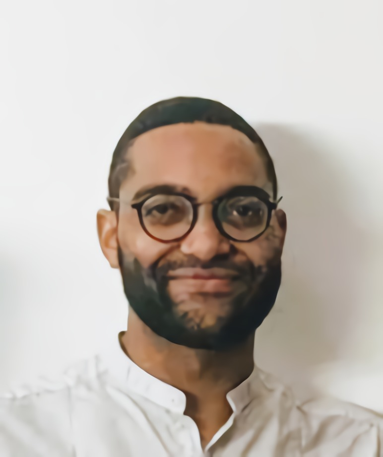
I am a research and development engineer based in London, with a PhD in electronic engineering from the SPE3D Ultrasonic Lab at London South Bank University (2026), on three-dimensional ultrasound imaging of the crystal structure of ice cores. The research required designing and building the complete measurement chain: an automated multi-axis ultrasonic scanner, acoustic wave propagation models, inversion algorithms and the supporting analysis software.
My work spans C++, Python and MATLAB, PCB design in KiCad, and mechanical design and fabrication. I place particular emphasis on systems that perform reliably beyond the laboratory: measured, validated and documented.
I led LSBU's UniBots UK team to second place in 2024 and third in 2023, and have competed in engineering competitions since undergraduate, including Pi Wars, the IMechE Design Challenge and the Engineering for People national final.
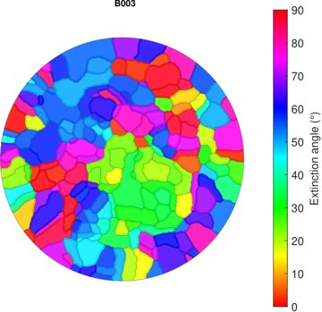
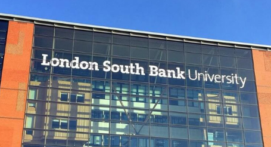
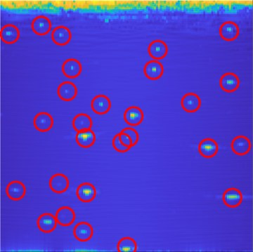
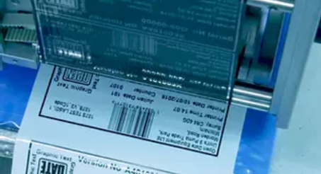
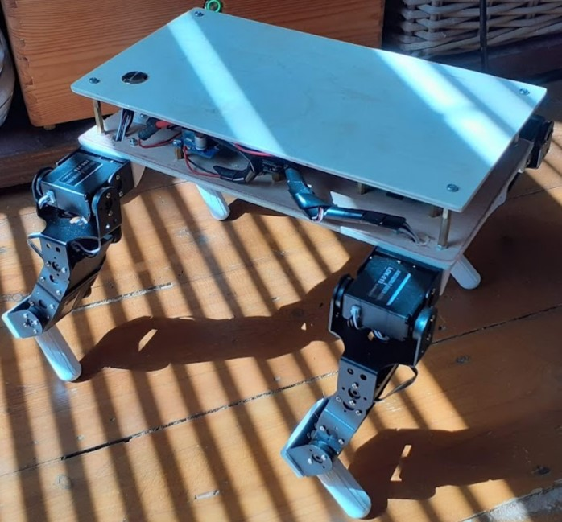
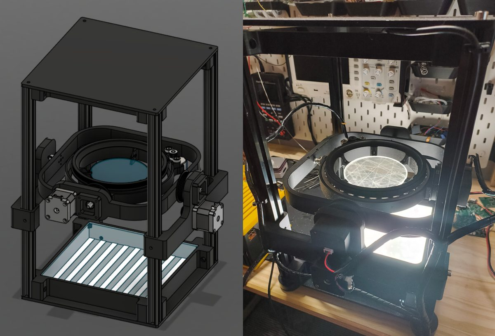
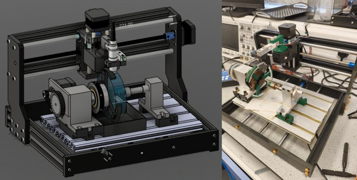
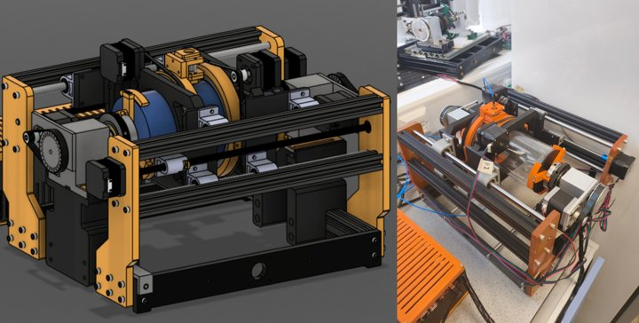
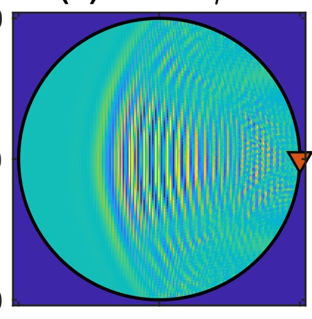
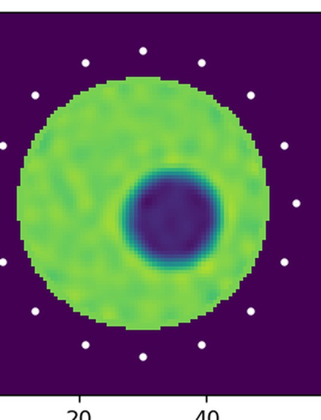
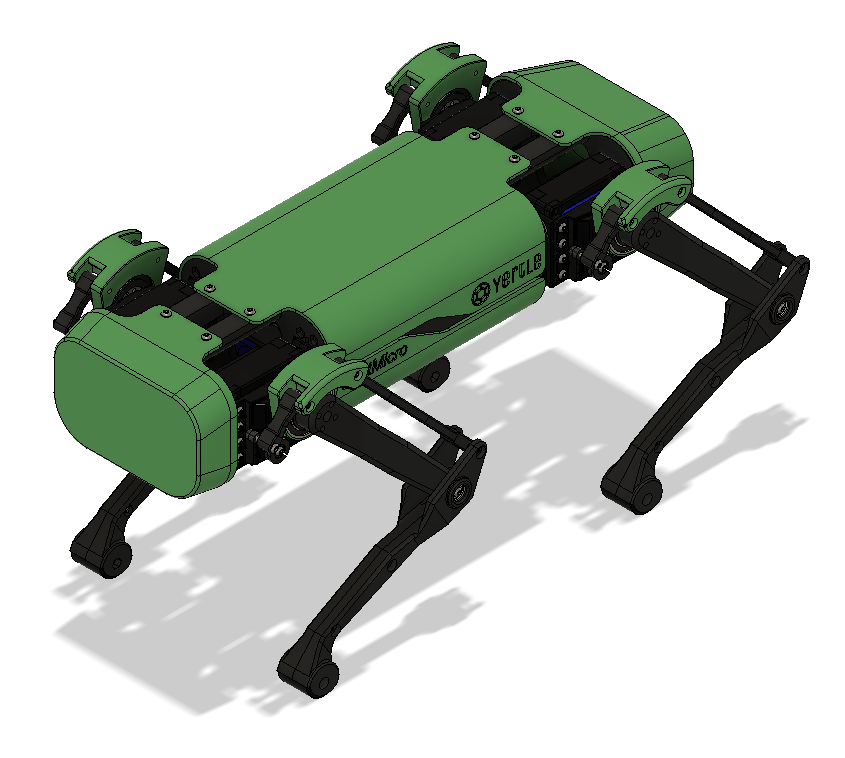
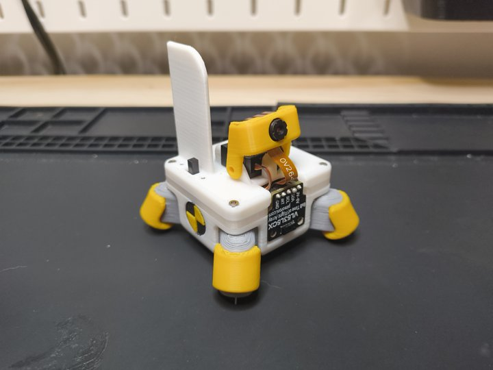
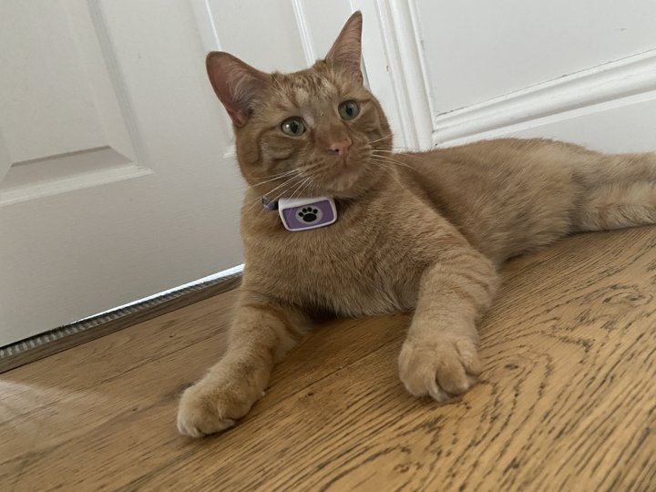
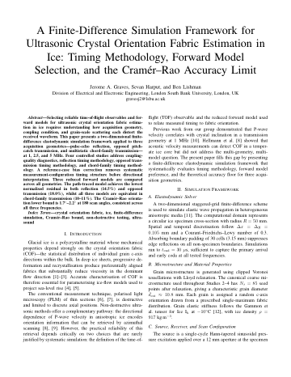
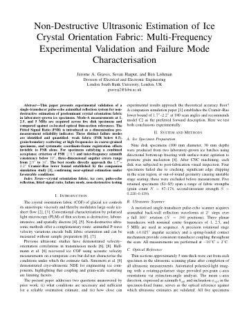
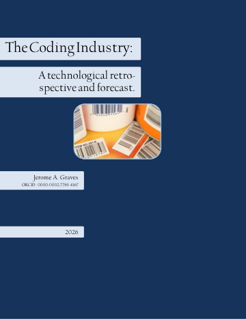
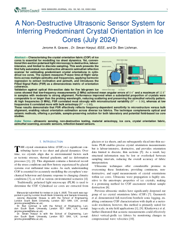
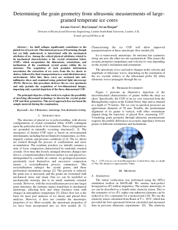
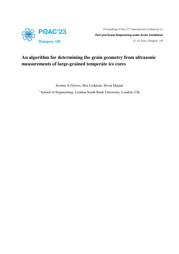
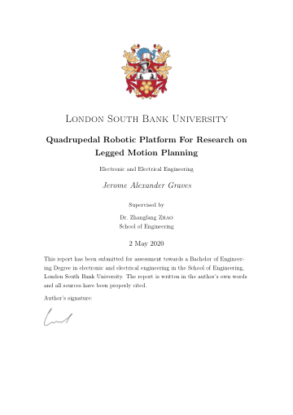
I am currently open to senior research and development engineering roles in ultrasonics, robotics and instrumentation. I am based in London; email is the most reliable way to reach me.